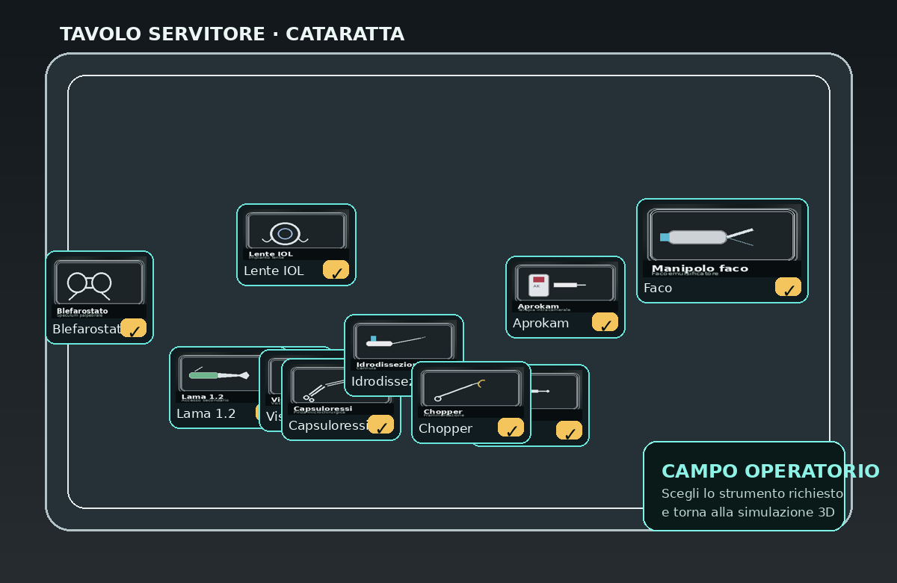

← Torna a SIMULATIO
Tavolo Servitore - Cataratta

👨⚕️ Istruzioni del Chirurgo
"Iniziamo. Dammi il blefarostato."
[INFO] Clicca sull'area dello strumento richiesto.
Ripeti richiesta (Audio)
Ricomincia